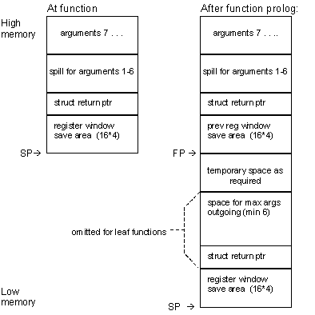

Copyright Ó 1999 CYGNUS
SOLUTIONS, Inc. All rights reserved.
No part of this document may be reproduced in any form
or by any means without the prior express written consent of CYGNUS
SOLUTIONS, Inc.
No part of this document may be changed and/or modified
without the prior express written consent of CYGNUS
SOLUTIONS, Inc.
GNUPro®, the GNUPro® logo,
and the Cygnus Solutions logo are registered trademarks of
CYGNUS SOLUTIONS, Inc.
All other brand and product names are trademarks of their respective owners.
Corporate Headquarters
CYGNUS SOLUTIONS
1325 Chesapeake Terrace
Sunnyvale, CA 94089 USA
TEL: +1 408 542 9600
Cygnus Japan
NIHON CYGNUS SOLUTIONS
Madre Matsuda Building
4-13 Kioi-cho Chiyoda-ku
Tokyo 102-0094 JAPAN
TEL: +81-3-3234-3896
FAX: +81-3-3239-3300
EMAIL: info@cygnus.co.jp
WEBSITE: http://www.cygnus.co.jp/
Cygnus Europe
CYGNUS SOLUTIONS
35-36 Cambridge Place
Cambridge CB2 1NS
United Kingdom
TEL: +44 1223 728728
FAX: +44 1223 728777
The complete tool name is a three-part hyphenated string. The first part indicates the processor family (‘sparclite’). The second part indicates the file format output by the tool (‘elf’). The third part is the generic tool name (‘gcc’). For example, the GCC compiler for the Fujitsu SPARClite is ‘sparclite-elf-gcc’.
The Fujitsu SPARClite package includes the following supported tools:
| Tool Description | Tool Name |
| GCC compiler | sparclite-elf-gcc |
| C++ compiler | sparclite-elf-c++ |
| GAS assembler | sparclite-elf-as |
| GLD linker | sparclite-elf-ld |
| Standalone simulator | sparclite-elf-run |
| Binary Utilities | sparclite-elf-ar
sparclite-elf-nm sparclite-elf-objcopy sparclite-elf-objdump sparclite-elf-ranlib sparclite-elf-size sparclite-elf-strings sparclite-elf-strip |
| GDB debugger | sparclite-elf-gdb |
Fujitsu SPARClite MB8683X evaluation board
| CPU | Operating System | Vendor |
| x86 | Windows NT 4.0 | Microsoft |
| x86 | Redhat Linux 5.x | Redhat |
| SPARC | Solaris 2.5.1 | Sun |
C:\cygnus\gnupro\i386-cygwin32\sparclite-elf\ecos-98r1p6
For Bourne shell compatible shells:
if ( "$?MANPATH" == "0"
) then
setenv MANPATH "/usr/local/man:/usr/man"
endif
if ( "$?INFOPATH" ==
"0" ) then
setenv INFOPATH "/usr/local/info:/usr/info"
endif
setenv MANPATH $PROOT/man:$MANPATH
setenv INFOPATH $PROOT/info:$INFOPATH
set path = ( $PROOT/H-i386-pc-linux-gnu/bin
$path )
For Bourne shell compatible shells:
if ( "$?MANPATH" == "0" ) then
setenv MANPATH "/usr/local/man:/usr/man"
endif
if ( "$?INFOPATH" == "0" ) then
setenv INFOPATH "/usr/local/info:/usr/info"
endif
setenv MANPATH $PROOT/man:$MANPATH
setenv INFOPATH $PROOT/info:$INFOPATH
set path = ( $PROOT/H-sparc-sun-solaris2.5/bin
$path )
__sparc__
__sparclite__
static object_t myobj __attribute__((init_priority (30000) ));
The syntax is slightly different if the object takes any arguments to its constructor:
static object_t myobj __attribute__((init_priority (30000) )) = \ object_t(arg1, arg2);
The numeric priority can be from 1 to 65535, with 1 being the highest priority, and 65535 being the lowest. The default priority for objects without this attribute is 65535. Constructors with a higher priority are guaranteed execution before constructors with lower priority.
In all cases, you must provide the argument ‘-finit-priority’ to the compiler on its command-line for it to recognize this attribute when you are compiling your C++ source files.
If you are using eCos, be warned that eCos uses initialization priorities internally. Ensure you choose an appropriate priority level so that other eCos subsystems will have initialized before you refer to them in your own constructor.
The GNUPro C and C++ compilers can now optionally remove these unnecessary functions from the final image. They also ensure that any shared global data is removed that is only referenced by functions that are removed. This can be done by including the options ‘-ffunction-sections’ and ‘-fdata-sections’ on the command-line, when you invoke the C or C++ compiler. The ‘-ffunction-sections’ option removes unnecessary functions, and the ‘-fdata-sections’ option removes unnecessary data.
In addition, when classes define virtual methods in C++,
it is possible to remove any unused methods from the final image by passing
the option
‘-fvtable-gc’
to the C++ compiler on its command-line.
In all cases, you must also supply a command-line option when linking. If invoking the linker ld directly, use ‘--gc-sections’ on its command-line; alternatively, if you are using the preferred method of linking your executable, using the form ‘gcc -o <program name> <file1>.o <file2>.o’, then also pass the option ‘-Wl,--gc-sections’ on the compiler command-line, for example:
| Type | Size (bytes) | Alignment (bytes) |
| char | 1 byte | 1 byte |
| short | 2 bytes | 2 bytes |
| int | 4 bytes | 4 bytes |
| long | 4 bytes | 4 bytes |
| long long | 8 bytes | 8 bytes |
| float | 4 bytes | 4 bytes |
| double | 8 bytes | 8 bytes |
| pointer | 4 bytes | 4 bytes |
| Register | Usage |
| %g0 | Holds constant 0 |
| %g1-%g4 | Free global registers for application usage. |
| %g5 | Available for application use. |
| %g6-%g7 | Reserved for the kernel. |
| %o0-%o5 | Input/output registers (for function calls made from this function) |
| %o6 | Stack pointer |
| %o7 | Return address |
| %l0-%l7 | Local registers |
| %i0-%i5 | Input/output registers (for this function call). |
| %i6-%i7 | Functions do not have to preserve value for the caller |
| %i6 | Frame pointer |

For information about SPARC assembler, see SPARC Architecture, Assembly Language Programming (Richard D. Paul, Prentice Hall). For information about the SPARC instruction set, see The SPARC Architecture Manual: Version 8 (SPARC International, Inc, Prentice Hall).
| Description | Register |
| Global integer registers (8) | ‘%g0’ through ‘%g7’ |
| Output integer registers (8) | ‘%o0’ through ‘%o7’ |
| Local integer registers (8) | ‘%l0’ through ‘%l7’ |
| Input integer registers (8) | ‘%i0’ through ‘%i7’ |
| Integer condition code register | ‘%icc’ |
| Processor status register (contains ‘%icc’) | ‘%psr’ |
| Multiply/divide accumulator register 17 | ‘%y’ |
| Auxiliary status register | ‘%asr17’ |
| Trap base register | ‘%tbr’ |
| Window invalid mask | ‘%wim’ |
There are two ways for GDB to talk to a SPARClite target.
Note:
Loading binaries into the simulator that were built for
the standard evaluation board with RAM startup will not work.
To activate the simulator in GDB, follow the instructions in the Simulator section later in this document.
Note:
When using the remote target, GDB does not accept the
‘run’
command. However, since downloading the program has the side effect of
setting the PC to the start address, you can start your program by typing
‘continue’
(the letter ‘c’
works as a shortcut for the ‘continue’ command).
Debugging programs with
multiple threads
In some operating systems, such as eCos, a single program may have more than one thread of execution. The precise semantics of threads differ from one operating system to another, but in general the threads of a single program are akin to multiple processes, except that they share one address space (that is, they can all examine and modify the same variables). On the other hand, each thread has its own registers and execution stack, and perhaps private memory.
GDB provides the following functions for debugging multi-thread programs
For debugging purposes, GDB associates its own thread
number, always a single integer, with each thread in your program.
info threads
(gdb) info threads
* 2 thread 2 breakme
()
at /eCos/packages/kernel/v1_2_1/tests/thread_gdb.c:91
Name: controller,
State: running, Priority: 0, More: <none>
1 thread 1 Cyg_HardwareThread::thread_entry
(thread=0x1111aaa2)
at /eCos/packages/kernel/v1_2_1/src/common/thread.cxx:68
Name: Idle Thread,
State: running, Priority: 31, More: <none>
When your program has multiple threads, you can choose
whether to set breakpoints on all threads, or on a particular thread.
If you do not specify ‘thread <threadno>’ when you set a breakpoint, the breakpoint applies to all threads of your program.
You can use the thread qualifier on conditional breakpoints
as well; in this case, place ‘thread
<threadno>’ before the breakpoint
condition, as the following example shows.
Conversely, whenever you restart the program, all threads start executing. This is true even when single stepping with commands like ‘step’ or ‘next’. In particular, GDB cannot single-step all threads in lockstep. Since thread scheduling is up to your debugging target’s operating system (not controlled by GDB), other threads may execute more than one statement while the current thread completes a single step. In general other threads stop in the middle of a statement, rather than at a clean statement boundary, when the program stops.
You might even find your program stopped in another thread after continuing or even single stepping. This happens whenever some other thread runs into a breakpoint, a signal, or an exception before the first thread completes whatever you requested.
Normally GDB does not attempt to interfere with thread scheduling. This means that in the default mode (‘scheduler-locking off’), the current thread may be scheduled out, and a different thread may begin running, at any time (as determined by the native scheduler). For instance, you may give a GDB command such as ‘step’ or ‘finish’, and when the command completes, you may be looking at a different thread.
If you set the scheduler-locking mode to ‘step’, then GDB will try to interfere with the native scheduler just enough to prevent another thread from popping up while you debug. Other threads may get to run sometimes, but whenever a command such as ‘step’ or ‘finish’ completes, you should be looking at the same thread that was running before the command. Of course, if another thread gets to run and hits a breakpoint, GDB will still switch you to that thread (so if you don’t want that to happen, then disable your breakpoints).
For even greater (and more intrusive) control over the thread scheduler, GDB provides the mode ‘scheduler-locking on’. In this mode, the native scheduler is completely locked, and no thread may run except the current one. Obviously this will radically change the behavior of your program, and may lead to deadlock or other unpleasant consequences, so use it with caution.
Syntax:
set scheduler-locking [off on step]
The GNUPro simulator allows execution of a program compiled for the SPARClite target CPU on any supported host computer. It includes a simulator module for the target CPU instruction set, memory, and may also include simulated peripheral devices such as serial I/O and timers. Altogether, these features allow developers to test their SPARClite programs, without need for an actual board with that CPU.
The SPARClite simulator is not designed to match timing characteristics of its target board. For example, the CPU module uses a single clock cycle for all instructions, its memory is infinitely fast, and its simulated serial I/O is infinitely fast. Furthermore, a number of obscure or inapplicable functions were omitted from the simulated peripherals. The simulator is just complex and accurate enough to run eCos programs.
The user program is provided with a single 512kb block of memory at address ‘0x02000000’.
HAL configuration, for various download methods
| Download method | HAL configuration |
| Download to board with CygMon | RAM startup |
| Download to simulator ignoring devices | SIM configuration |
| Burn hardware ROM | ROM Startup |
Simulator clocks and timers sometimes appear to be running very slowly,
even when there are apparently no active threads. Delays that should only
be in seconds can run to minutes. These delays occur because the eCos kernel
idle thread is running intensively, and the simulator emulates it faithfully.
With the SIM configuration, however, the eCos kernel realizes it is in
a simulated environment, and can therefore adjust the clock settings to
be more realistic.
To solve this, you can tell GDB not to process breakpoints
itself, but to let the simulated target process them. To do this, use the
following command:
For example the command ‘handle
SIGTRAP pass nostop noprint’ tells GDB to not
stop the simulated target at a breakpoint, or even to print that it has
been stopped. Instead, the command tells GDB to pass the information back
to the program. You can modify the command to use with other signals and
exceptions.
CygMon has basic program handling and debugging commands, programs can be loaded into memory and run, and the contents of memory can be viewed. There are several more advanced options that can be included at compile time, such as a disassembler (this of course increases the code size significantly).
Since CygMon contains a GDB remote stub, full debugging can be done from a host running GDB to a target running CygMon. Switching between CygMon monitor mode and GDB stub mode is designed to be transparent to the user, since CygMon can detect when GDB is communicating with the target and switch into stub mode. When GDB stops communicating with the target normally, it sends a termination packet which lets the stub know when to switch to the CygMon monitor mode.
The command parser was written specifically for CygMon, to provide necessary functionality in limited space. All commands consist of words followed by arguments separated by spaces. Abbreviations of command names may be used. Any unique subset of a command name is recognized as being that command, so ‘du’ is recognized to be the ‘dump’ command. The user is prompted to resolve any ambiguities. Generally, a command with some or all of its arguments empty will either assume a default-set of arguments or return the status of the operation controlled by the command.
Installing and building
CygMon
C:\Program Files\Cygnus Solutions\eCos\ecos-98r1p6\cygmon-src
Programs->Cygnus eCos->eCos Development Environment
This will bring up a window running “bash”.
Mount the sources such that the full path to the CygMon
sources uses only alphanumeric, dash or underscore characters:
cygmon.img
| File Names | Description |
| cygmon/bsp/monitor.c | Generic CygMon monitor support |
| cygmon/bsp/monitor_cmd.c | Cygmon commands |
| cygmon/bsp/ledit.c | Line editing support |
| cygmon/generic_fmt32.c | Address to/from string conversion |
| cygmon/generic_bp32.c | Breakpoint support |
| cygmon/generic_mem.c | Memory read/write support |
| cygmon/sparc/sparc-bspmon.c | Sparc-specific monitor support |
| bsp/common/*.c | Common BSP support |
| bsp/common/gdb.c | Generic gdb stub |
| bsp/common/gdb-threads.c | Generic thread debug support |
| bsp/net/*.c | Generic network support |
| bsp/sparc/*.c | Sparc-specific support |
| bsp/sparc/gdb-cpu.c | Sparc-specific gdb support |
| bsp/sparc/singlestep.c | Sparc-specific singlestep support |
| bsp/sparc/mem.c | Safe sparc memory read/write |
| bsp/sparc/start.S | Sparc reset handler |
| bsp/sparc/vectors.S | Sparc trap vector table |
| bsp/sparc/exceptions.S | Default sparc exception handler |
| bsp/sparc/stublow.S | Low-level gdb stub entry. |
| bsp/sparc/mb8683x/init_86x.S | Low-level board startup. |
| bsp/sparc/mb8683x/mb.c | High-level board-specific support |
| bsp/sparc/mb8683x/mb86964.c | Ethernet driver |
The baud command sets the speed of the active serial port. It takes one argument, which specifies the speed to which the port will be set.
Example: baud 9600
Sets the speed of the active port to 9600 baud.
The break command displays and sets breakpoints in memory. It takes zero or one argument. With zero arguments, it displays a list of all currently set breakpoints. With one argument it sets a new breakpoint at the specified location.
Example: break 4ff5
Sets a breakpoint at address ‘4ff5’.
The disassemble command disassembles the contents of memory. Because of the way breakpoints are handled, all instructions are shown and breakpoints are not visible in the disassembled code. The disassemble command takes zero or one argument. When called with zero arguments, it starts disassembling from the current (user program) ‘pc’. When called with a location, it starts disassembling from the specified location. When called after a previous call and with no arguments, it disassembles the next area of memory after the one previously disassembled. The disassemble command may be disabled depending upon copyright issues.
Example: disassemble 45667000
Displays disassembled code starting at location ‘45667000’.
The dump command shows a region of 16 bytes around the specified location, aligned to 16 bytes. Thus, ‘dump 65’ would show all bytes from ‘60’ through ‘6f’.
Example: dump 44f5
Displays 16 bytes starting with ‘44f0’ and ending with ‘44ff’.
The go command starts user program execution. It can take zero or one argument. If no argument is provided, go starts execution at the current ‘pc’. If an argument is specified, go sets the ‘pc’ to that location, and then starts execution at that location.
Example: go 40020000
Sets the ‘pc’ to 40020000, and starts program execution.
The help command without arguments shows a list of all available commands with a short description of each one. With a command name as an argument it shows usage for the command and a paragraph describing the command. Usage is shown as command name followed by names of extensions or arguments.
Arguments in [brackets] are optional, plain text arguments are required. Note that all commands can be invoked by typing enough of the command name to uniquely specify the command. Some commands have aliases, which are one letter abbreviations for commands which do not have unique first letters. Aliases for all commands are shown in the help screen, which displays commands in the format:
command name: (alias, if any) description of command
Example: help foo
Shows the help screen for the command ‘foo’.
The load command switches the monitor into a state where it takes all input as s-records and stores them in memory. The monitor exits this mode when a termination record is hit, or certain errors (such as an invalid s-record) cause the load to fail.
The memory command is used to view and modify single locations in memory. It can take a size extension, which follows the command name or partial command name without a space, and is a period, followed by the number of bits to be viewed or modified. Options are 8, 16, 32, and 64. Without a size extension, the memory command defaults to displaying or changing 8 bits at a time.
The memory command can take one or two arguments, independent of whether a size extension is specified. With one argument, it displays the contents of the specified location. With two arguments, it replaces the contents of the specified location with the specified value.
Example: memory.8 45f6b2 57
Places the 8-bit value 57 at the location ‘45f6b2’.
The SPARC architecture supports multiple address spaces. An alternate address space for the location can be specified by enclosing the address space identifier in brackets and prepending it to the location.
Example: memory.8 [4]45f6b2 57
Places the 8-bit value 57 at the location ‘45f6b2’ in address space 4.
The port command allows control over the serial port being used by the monitor. It takes zero or one argument. Called with zero arguments it displays the port currently in use by the monitor. Called with one argument it switches the port in use by the monitor to the one specified. It then prints out a message on the new port to confirm the switch.
Example: port 1
Switches the port in use by the monitor to port 1.
The register command allows the viewing and manipulation of register contents. It can take zero, one, or two arguments. When called with zero arguments, the register command displays the values of all registers. When called with only the register name argument, it displays the contents of the specified register. When called with both a register name and a value, it places that value into the specified register.
Example: register g1 1f
Places the value 1f in the register ‘g1’.
The step command causes one instruction of the user program to execute, then returns control to the monitor. It can take zero or one argument. If no argument is provided, step executes one instruction at the current pc. If a location is specified, step executes one instruction at the specified location.
Example: step
Executes one instruction at the current ‘pc’.
The terminal command sets the type of the current terminal to that specified in the type argument. The only available terminal types are vt100 and dumb. This function is used by the line-editor to determine how to update the terminal display.
Example: terminal dumb
Sets the type of the current terminal to a dumb terminal.
The transfer or $ function transfers control to the gdb stub. This function does not actually need to be called by the user, as connecting to the board with gdb will call it automatically. The transfer command takes no arguments. The $ command does not wait for a return, but executes immediately. A telnet setup in line mode will require a return when executed by the user, as the host computer does not pass any characters to the monitor until a return is pressed. Disconnecting from the board in gdb automatically returns control to the monitor.
The unbreak command removes breakpoints from memory. It takes one argument, the location to remove the breakpoint from.
Example: unbreak 4ff5
Removes a previously set breakpoint at memory location ‘4ff5’.
Shows the amount of memory being used by the monitor, broken down by category. Despite its name, it has nothing to do with the usage of any other command.
The version command displays the version of the monitor.
These are common “EMACS” and “X” text editing escape sequences. Here are the keys for editing.
| Keystroke | Command |
| CR ‘\n’ | Execute the currently displayed command |
| ctl-a | Move to Beginning of line |
| ctl-e | End of line |
| ctl-f | Forward char |
| ctl-b | Backward char |
| ctl-k | Delete to end of line |
| ctl-y | Yank Character (undelete) |
| ctl-d | Delete current character |
| ctl-p | Edit previous command |
| ctl-u | Erase Line |
| ctl-n | Edit next command |
When developing and debugging CygMon, it is convenient to run CygMon itself as a downloadable application. There are some modifications that the developer may want to make temporarily, to debug CygMon. Reconfigure CygMon so it does not patch the exception handler. Have your test program call breakpoint explicitly. This combination disables CygMon in some serious ways, but many essential features remain functional and debuggable. Breakpoints can be administered, memory accesses can be tested, or registers fetched. You can debug the serial driver. But, you cannot resume execution, single step or test if a breakpoint has been hit. You can force CygMon through its context-save and context-restore. This is the plan; get all the basics working and verified, and then restore the exception patching capability.
Enter datastore (files or nisplus)
[files]:files
Enter absolute path to datastore
directory [/var/dhcp]:/var/dhcp
### DHCP server daemon option
setup ###
Would you like to specify nondefault
daemon options (Y/[N]):n
### Initialize dhcptab table
###
Enter default DHCP lease policy
(in days) [3]: 3
Do you want to allow clients
to renegotiate their leases? ([Y]/N):n
### Select Networks For BOOTP/DHCP Support ###
Enable DHCP/BOOTP support of networks you select? ([Y]/N):y
### Configure Local Networks ###
Configure BOOTP/DHCP on local
LAN network: 192.168.2.0 ([Y]/N):y
Do you want hostnames generated
and inserted in the files hosts table? Y/[N]):n
Enter starting IP address [192.168.2.0]:
192.168.2.0
Enter the number of clients
you want to add (x < 63): 1
Disable (ping) verification
of 192.168.2.02.168.2.0 address(es)? (Y/[N]):n
Configured 0 entries for network:
192.168.2.0.
### Configure Remote Networks ###
Would you like to configure BOOTP/DHCP
service on remote networks? ([Y]/N):n
Would you like to restart the
DHCP service? (recommended) ([Y]/N):y
****************************
Once the databases have been setup, a BOOTP reservation can be created via the ‘pntadm’ command.
For example the command below would reserve the IP address
‘192.168.2.44’
for the board, with hardware address ‘0:0:e:31:0:1’
(the leading 01 of the argument to the ‘-i’
switch specifies the hardware type - 10Mbps ethernet).
According to the Microsoft Knowledge Base article "How
to Configure Microsoft DHCP Server for BOOTP Clients", the DHCP Server
that comes standard with NT Server 4.0 should provide BOOTP service if
Service Pack 2 or later has been applied. See:
sleb1:
:ha=00000E310001:
:tc=.default:
:ip=192.168.2.44:
Getting Started with eCos version 1.2.1
(Sunnyvale: Cygnus Solutions, 1999)
eCos User Guides version 1.2.1
(Sunnyvale: Cygnus Solutions, 1999)
eCos Reference Manual version 1.2.1
(Sunnyvale: Cygnus Solutions, 1999)
Getting Started with GNUPro Toolkit
(Sunnyvale: Cygnus Solutions, 1999)
GNUPro Compiler Tools
(Sunnyvale: Cygnus Solutions, 1999)
GNUPro Debugging Tools
(Sunnyvale: Cygnus Solutions, 1999)
GNUPro Libraries
(Sunnyvale: Cygnus Solutions, 1999)
GNUPro Utilities
(Sunnyvale: Cygnus Solutions, 1999)
GNUPro Advanced Topics
(Sunnyvale: Cygnus Solutions, 1999)
GNUPro Tools for Embedded Systems
(Sunnyvale: Cygnus Solutions, 1999)
System V Application Binary Interface
(Prentice Hall, 1990)